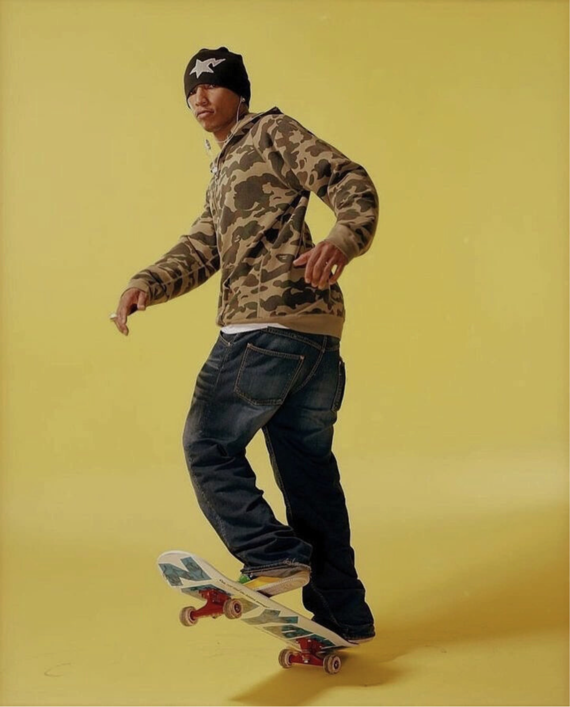
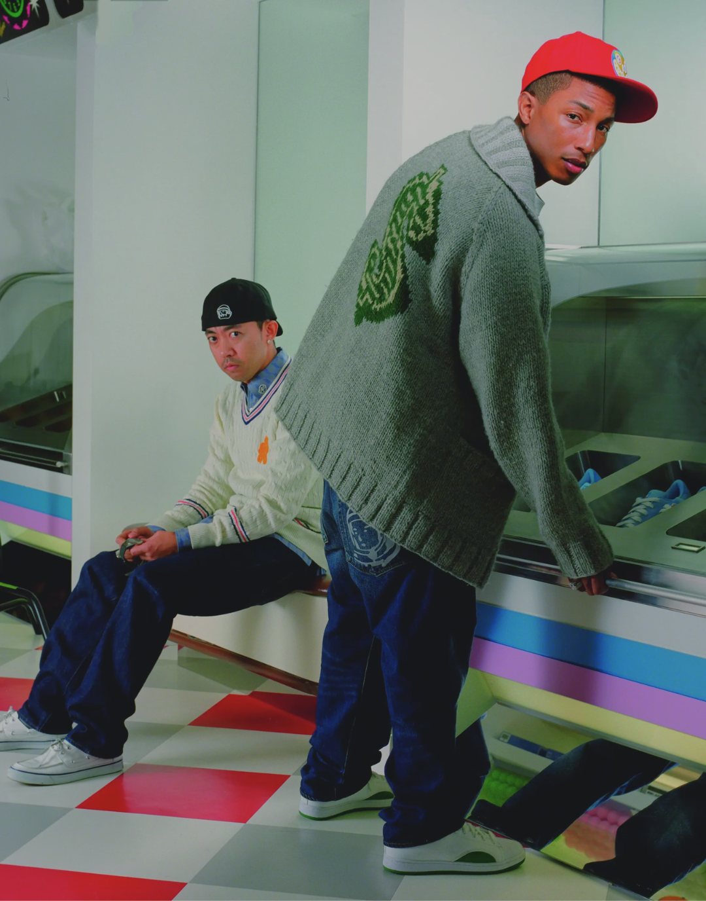
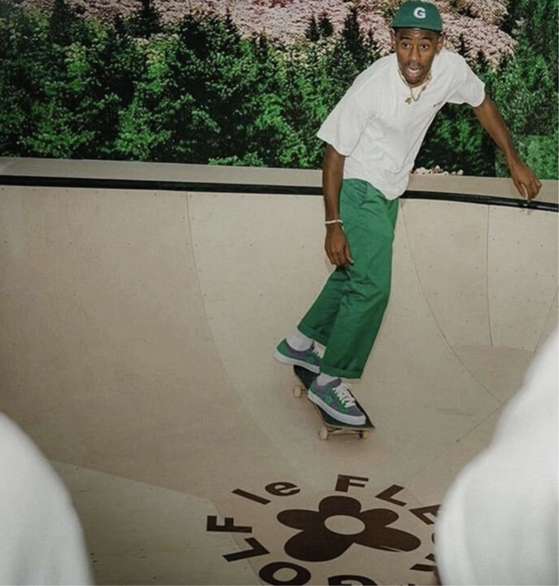
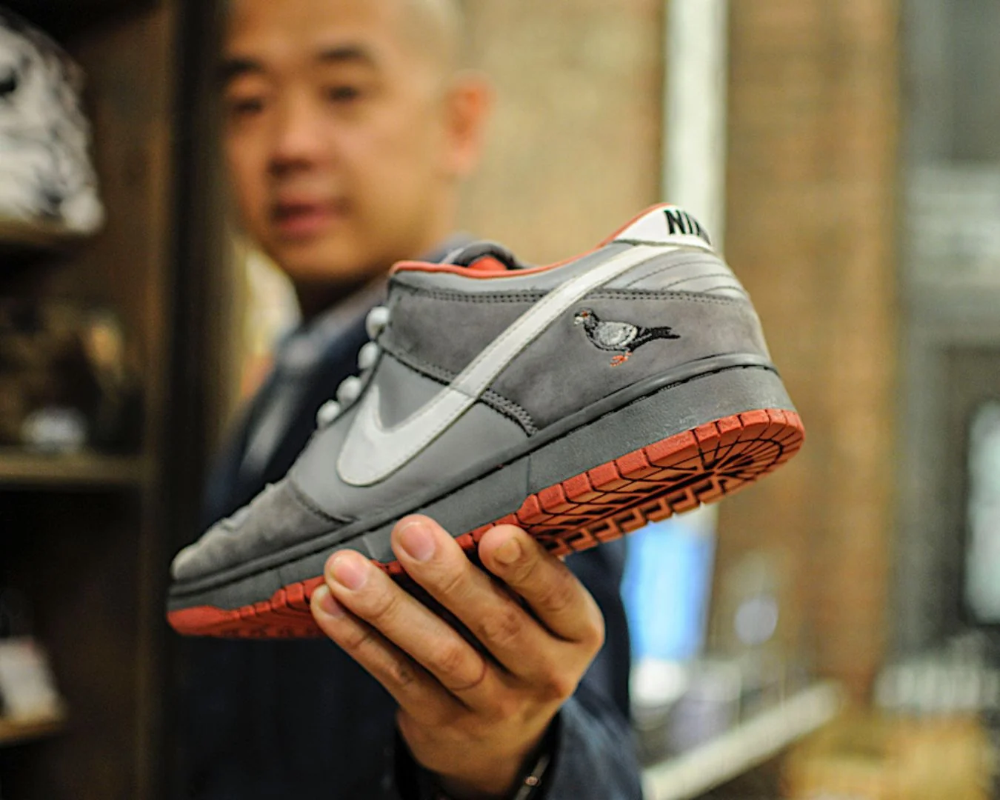

From subculture to centerpiece, how skateboarding reshaped fashion, music, and design. Skateboarding didn’t come with a stylist, It came with scrapes, with sound, and with a kind of style that couldn’t be taught. For many, it was a way to stay active, to move freely, and to push back against the norm. It wasn’t polished or packaged—it was raw, personal, and always in motion.

Pharrell Williams for Blender Magazine. Photo via Pinterest.
From Virginia to Harajuku
Skate culture’s roots may trace back to California pools, but by the early 2000s, its heartbeat was global. In Virginia Beach, Pharrell Williams, also known as Skateboard P, was connecting skate style with sound. To Pharrell, skateboarding had rhythm, freedom, and unpredictability. It shaped his music, his style, and the way he saw the world.
In 2003, Pharrell partnered with Japanese designer Nigo, founder of A Bathing Ape, to launch Billionaire Boys Club. Their shared passion for skate culture, streetwear, and music brought together two distinct creative worlds. Alongside its sister brand Ice Cream, BBC reimagined what skatewear could look like, bringing elevated design to a culture built on individuality and self-expression.

Pharrell and Nigo. Photo via Billionaire Boys Club.
From the Streets to the Runway
Pharrell’s vision didn't stop at streetwear. In 2023, he was named Men's Creative Director at Louis Vuitton, stepping into the role once held by his friend Virgil Abloh. He brought the same creative instincts that shaped Billionaire Boys Club into the world of luxury fashion.
Meanwhile, Nigo had taken the helm at Kenzo, also under LVMH. Together, their influence reached the heart of high fashion without leaving their roots behind. Their work looked like the future but felt like the streets. From Tokyo to Paris, they didn't follow fashion. They redirected it.
Nigo, Tyler, and Pharrell, Paris Fashion Week 2022. Photo via Vogue.
The Rise of an “Odd Future”
Tyler, The Creator’s relationship with skate and fashion culture was shaped by early musical influences, particularly Pharrell Williams and The Neptunes. Growing up in Hawthorne, California, Tyler discovered their music at a young age, sparking a creative instinct that would eventually define his own work.
In 2007, that energy found a home in Odd Future Wolf Gang Kill Them All, better known as Odd Future. More than a rap collective, it became a cultural movement blending music, skateboarding, and fearless self-expression.
For Tyler, these worlds were inseparable. Inspired by Pharrell’s creativity, he built his own visual language around skateboards, Vans, and an unapologetically rebellious approach to style.That vision carried into Golf Wang, his streetwear label known for bold colors, playful graphics, and individuality. His collaborations with Converse, including the Golf le Fleur line, brought his eccentric aesthetic to classic footwear, merging skate influences with personal expression.
Through music, fashion, and skateboarding, Tyler created a world of his own, proving that these cultures were never separate but connected by a shared instinct to challenge the rules.

Tyler, the Creator, GOLF WANG. Photo via Pinterest.
From Boards to Billboards
Skateboarding never asked for corporate approval, but eventually, the fashion industry followed its lead. What began on the pavement made its way onto runways, into boardrooms, and across billboards.
Vans was there from the beginning. Founded in California in 1966, its canvas uppers and signature waffle soles became staples of skate culture. Rather than simply market rebellion, Vans built footwear that could withstand it, later investing in skaters, parks, and events.
Converse, once known primarily for basketball, found a second life on the sidewalk. Worn-in and customized Chuck Taylors became part of skate culture before the brand launched CONS, introducing reinforced designs built for performance while preserving their appeal as a canvas for self-expression.Its partnerships with skaters like Kenny Anderson further cemented that relationship. Dating back to the late '90s, their collaboration evolved through signature models like the KA-One and KA-III, blending skate performance with thoughtful design.
Nike arrived later. Its early attempts to enter skateboarding in the '90s met resistance, but the launch of Nike SB marked a turning point. By recruiting professional skaters and introducing limited-edition Dunk collaborations, Nike gradually earned credibility in a culture that had never been easy to buy into.
The Sneaker of the Sidewalks
By the time the Pigeon dropped, the people had listened. Nike wasn’t just in the skate game, they were shaping it. In 2005, designer Jeff Staple dropped the Nike SB Dunk Low “Pigeon” in NYC. Only 150 pairs. The release sparked chaos. Insane lines, police, even arrests. But this wasn’t just about shoes, it was about something bigger: a moment when underground style took center stage. Skateboarding had entered the arena and the agenda.
The Nike Dunk had long been popular in skate circles for its solid construction and customizable canvas, but the Pigeon took things to a new level. Suddenly, the Dunk became a coveted icon, sparking a collector’s craze that mixed skate, sneaker culture, and hype in a way never seen before.
The hype around the Dunk went crazy, and Nike began to capitalize on it. Every new drop was a story, a nod to skate’s roots and its growing influence on streetwear and fashion worldwide. But as Nike ramped up production and collaborations, some fans felt the brand lost a bit of its underground edge. What started as a raw symbol of skate culture slowly became more mainstream, diluting its original value in the eyes of core skaters. Still, the Pigeon and the early Dunks remain iconic reminders of when skateboarding truly stepped into the cultural spotlight.

Staple Design x Nike Dunk Low Pro SB "Pigeon". Photo via Staple Design.
Supreme and the Skateboard as Canvas
What began as a skate shop on Lafayette Street, NYC became a cultural disruptor. Supreme didn’t market to skaters, it simply was skaters. But as it evolved, so did the board itself. Decks once trashed in the streets were suddenly framed, not for their wear but for their design.
Limited-edition collaborations with big names like the Yankees, KAWS, and Murakami turned skateboards into collectible art and objects that lived on walls, not just sidewalks. This shift didn’t only elevate the board; it redefined what skate culture could mean in design, fashion, and art spaces. What was once rebellion on four wheels became a curated expression of “cool.”

Supreme x New York Yankees Skateboard Deck, 2015. Photo via Supreme.
The Walk Forward
Skateboarding was never about waiting for permission. What began as a rebellion against the rules has become a culture that continues to rewrite them.
Today, skaters are stepping beyond the pavement and into places once out of reach: the front rows of fashion week, global campaigns, and podiums.
But, their influence was never handed to them. It was built through persistence, creativity, and a refusal to conform. The board may have opened the door, but the culture continues to move it forward.